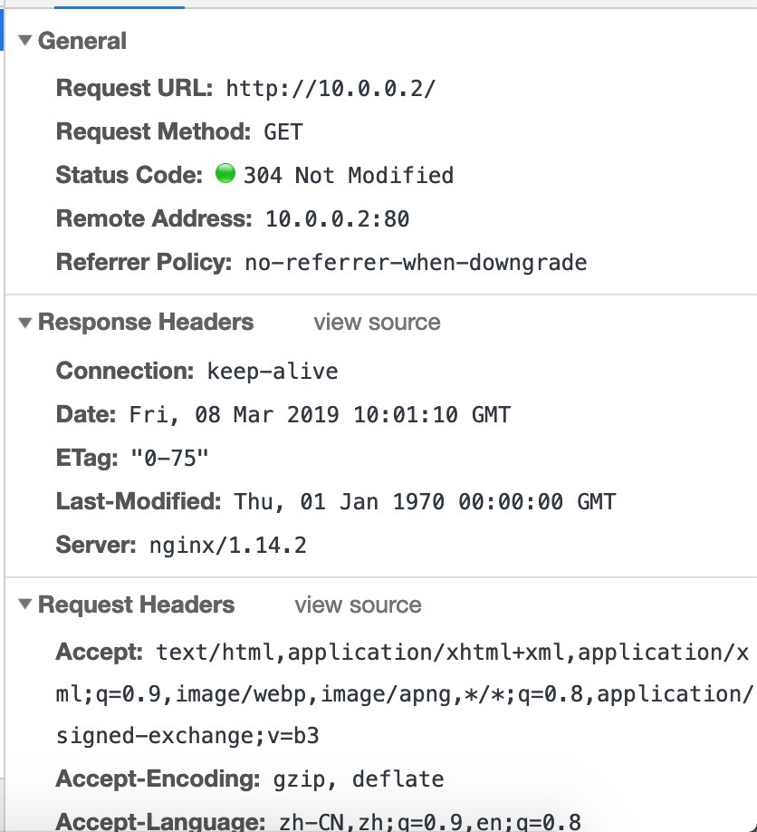

在 Linux 中用 C 代码获取 DNS 服务器列表
最近在做一个作业的时候，发现里面有个步骤是获取 Linux 系统中的 DNS 服务器列表，它的方法很粗暴，直接 cat grep cut 再处理。我就在想有没有完全代码的实现，然后搜了一下，果然有：
用到了全局变量 _res ，虽然很 hacky，但是至少是工作的，不清楚兼容性几何。
最近在做一个作业的时候，发现里面有个步骤是获取 Linux 系统中的 DNS 服务器列表，它的方法很粗暴，直接 cat grep cut 再处理。我就在想有没有完全代码的实现，然后搜了一下，果然有：
用到了全局变量 _res ，虽然很 hacky，但是至少是工作的，不清楚兼容性几何。
来了来了
最近在做 FPGA 上硬件的路由器，感觉接近一个基本可用的阶段了吧，大概谈一谈做这个的思路、过程和踩过的坑。
首先，做实验用的板子是 Alinx AX7021，FPGA 是 Xilinx xc7z020clg484-2，扩展板上有 4PL+1PS 个网口和千兆 KSZ9031RNX PHY，采用的接口是 RGMII。一开始做的自然是做 RGMII，但是遇到了困难，RGMII 在千兆模式下传输的是 DDR 信号，而时序和延迟就是个比较麻烦的事情。一开始先直接拿 Xilinx 的 AXI Ethernet IP 来用，然后上 ILA 看到了 IDDR 后的信号，第一次看到了完整的以太网帧，从 Preamble 和 SFD 到最后的 FCS。于是就特别振奋，想着手写 RGMII，先做收，再做发。确实，收很容易，很快就做出来了，但是写总是出问题，当时也不懂跨时钟域的一些问题，总之各种没调出来。于是就退而求其次，选择了 Xilinx 的 Tri Mode Ethernet IP 了。
Tri Mode Ethernet IP 有很多选项，为了简单，直接采用了 AXI-Stream 的接口，不要 AXI4-Lite 什么的，都不要，因为我需要直接写剩余的逻辑。其他东西能省也都省掉了。这个 IP 确实很给力，很快就可以完成收和发的操作了，这次终于知道了怎么处理跨时钟域的问题 — XPM FIFO ASYNC，一下推进了很大的进度。
既然可以收，也可以发了，就扩展到多个网口。这个 IP 中可以选择 Shared Logic 在内部，也可以在外部，研究了一下发现，应该是一个放内部，其余选外部，然后接起来就可以了。不过目前为了简单，还是只用了俩端口。在这个基础上，就开始解析收进来的以太网帧了。
第一步自然是填 ARP 表，自然问题来了，如果多个网口同时进来数据，怎么保证 ARP 表读写的正确性？自然就想到总线上需要做仲裁，于是写了一个简单的总线仲裁，顺带学习到了 unique case(z) 和 priority case(z) 的语法。然后 ARP 表怎么实现呢，大概就是一个哈希表，然后表里维护了（IP，MAC，PORT）三元组，然后实现了一些冲突和覆盖的处理逻辑，做这些的同时也对各个模块编写相应的测试。有了 ARP 表，就可以在解析以太网帧的时候，拆解出里面的信息，然后请求 ARP 表总线，然后写入。
第二步则是相应 ARP 请求，这就需要发出以太网帧。由于 4 个端口都可能向 4 个端口发出以太网帧，这就需要一个 4x4 matrix + 仲裁。不过目前为了简单，就还没有上 FIFO，直接仲裁进到目的端口的 TX FIFO 中了。这一步并不难，不过在最后 AXI-Stream 的一步遇到了一些困难。由于 Tri Mode Ethernet IP 对 tready 和 tvalid 有特定的要求，所以这里只能用 FWFT FIFO 进行，然后进行了一波神奇的操作，最后搞定了这个事情。成果就是可以从电脑上 arping 通指定的地址了。
第三步，也是正在做的一步，就是真正实现 IP 包的转发，这需要三个步骤：解析目的地址，查询路由表，查询 ARP 表。于是需要照着 ARP 表的方案同样做了路由表的仲裁，目前为了简单也还是把路由表设置为静态的。这里就需要做一些特殊的考虑，例如上面三步是串行的，但是我需要同时把 IP 包存一份，最后转发的时候修改一点就发出去了，所以需要等两步都做完，才能继续下一个包的处理。目前做到了第二小步，正在向最后一步查询 ARP 表进发。
UPDATE：现在最后一步也做好了，但是遇到了小问题，还是不能偷懒，需要写一个 XPM_MEMORY_SPRAM，直接写一个大的数组太浪费 LUT 了。
UPDATE-2019-04-27：It WORKS now. 不过也发现了之前写的 ARP 表有点问题。
最早买域名的时候，买的是 jiegec.xyz，后来发现了更好的域名，于是这个老域名一直就是一个简单的网页转址。很快，它就要过期了，我也不打算续费了，大家继续用我的新域名吧。
P.S. 忽然发现我之前配的 acme.sh 没有配自动 nginx -s reload ，所以之前 ssl 证书时间凉了。
写到了第 20 期了！最近几期总是在咕咕。
忽然想起来忘了这件事情两天。。
最近在研究软路由在 rCore 上的实现，但限于硬件限制，目前先在虚拟机里测试。软路由大概要做这些东西：
1. 抓包，解析包里的内容
2. 查路由表，找到下一跳在哪
3. 查 ARP，知道下一跳的 MAC 地址
4. 减少 TTL，更新 IP Checksum
5. 把包发出去
第一步直接拿 smoltcp 的 Raw Socket 即可，但是目前只能抓指定 IP Protocol 的包，我用的是 ICMP，但其他的就还抓不了，需要继续改 Smoltcp 源代码。
第二步用的是之前刚修好的 treebitmap 库，它提供了路由表的查询功能，目前路由表还是写死的，之后会用已经部分实现好的 Netlink 接口读取出来。
第三步则是 ioctl 发请求，然后从 smoltcp 内部的 ARP cache 里读取。
第四步很简单，不用多说。
第五步则需要指定出端口，用了一个 index，放在一个特定的 sockaddr 中。
最后的效果就是，能双向转发 ping 通。
网络拓扑：

可以，这很玄学。
后续在想在真机上实验，但是还缺一个网卡驱动，不然就可以用神奇的办法来做这个实验了。
不咕不咕
欢迎投稿。
最近拿到了高云 FPGA GW2A-18 开发版，想在这上面做一些小工程。不过首先要配置好环境什么的。官方提供了 Linux 和 Windows 的两套工具，自然是拥抱 Linux 咯，但是由于官方适配的是 Redhat 系的操作系统，所以用 Debian 系的时候出现了若干问题，后面会谈到怎么解决的。
首先是官网下载了它的软件，大概有 IDE，综合器，布线器和 Programmer 四个工具，然后开始跑，发现缺少了 libcrypt.so.1.0.0。上网搜了一下解决方案，需要重新编译 openssl-1.0.0，于是下载并且编译了 openssl-1.0.0t 并且把 .so 的路径调好了，这时候就可以打开 IDE 了。然后发现需要 License，这个很简单，去官网申请一下，一天邮件就下来了。
接下来配置 License，IDE 很容易，直接选择邮件里发下来的 node-locked License 即可。不过 Synplify Pro 的 Linux 版本不支持直接单文件 node-locked 的 License，只允许跑 SCL … 不过高云也提供了 SCL 的下载，和 IDE 的 License Server 放在一起，安装完以后，在得到的 License 里加上两行：
然后把 $LM_LICENSE_FILE 指向这个文件路径，就可以了。这一部分感谢 @Jackey-Huo。
随手写了一个简化版的点亮数字人生（没有数码管），得到了 bistream，准备往板子里刷，然后问题出现了：
ImportError: /path/to/Gowin_YunYuan_V1.9.0Beta_linux/Programmer/bin/librt.so.1: symbol __vdso_clock_gettime version GLIBC_PRIVATE not defined in file libc.so.6 with link time reference
目测是 glibc 版本问题 … 这就很难处理了。另外又从官网下载了独立的 Programmer，仍然不行，检测不到设备。
最后想了想，找到了终极办法，在 Docker 里运行 CentOS 的 Privileged Container，再跑 programmer：
CentOS 镜像出乎意料地小。进去以后，找到 Programmer 路径，然后 scan：
# ./programmer_cli --scan
Scanning!
Current download-cable channel:0
Device Info:
Family: GW2A
Name: GW2A-18
ID: 0xREDACTED
1 device(s) found!
Cost 0.54 second(s)
接着烧到 SRAM 中：
# ./programmer_cli -d GW2A-18 --fsFile /path/to/bitstream.fs --run 2
"SRAM Program" starting on device-1...
Programming...: [#########################] 100%
User Code: 0xREDACTED
Status Code: 0xREDACTED
Cost 4.54 second(s)
烧录成功，功能测试也没有问题。可以继续进行下一步工作了。
对不起咕咕了两天。。
最近 rCore 支持了动态链接库，于是想着在测试 sqlite 的时候直接用动态的，不过出现了玄学的问题，它会访问一个不存在的地址，看代码也没看出个所以然来。所以研究了一下 sqlite 的静态编译。首先在 configure 的时候尝试了一下：
发现 libsqlite 确实是静态了，但是 sqlite3 并不是。一番研究以后，发现是 libtool 的原因，只要这样编译：
就可以编译出静态的 sqlite3 ：
继续沉迷写 OS +1
alias heic="magick mogrify -monitor -format jpg *.HEIC" ref: Apple SE最近又把一定的精力放到了 RISC-V 64 上的 rCore 用户态程序的支持上，同时也借到了 HiFive Unleashed 板子，所以有真实硬件可以拿来跑了。在这之前先在 QEMU 上把能跑的都跑起来。
由于 rCore 对 glibc 的支持一直有问题，RISC-V 也不例外，所以还是选择用 musl 来做这件事情。一般搜索，终于找到了 Linux 下能用的 musl-riscv-toolchain 。编译好工具链以后，很多需要 libc 的用户态都能跑了，于是想着试一下 nginx 的编译。试着编译了一下，遇到了各种问题，最后搜到了交叉编译 Hi3536 上面使用的 nginx，里面的方法解决了这个问题。最后总结出了这样的 patch :
diff --git a/nginx-1.14.2/auto/cc/name b/nginx-1.14.2/auto/cc/name
index ded93f5..d6ab27a 100644
--- a/nginx-1.14.2/auto/cc/name
+++ b/nginx-1.14.2/auto/cc/name
@@ -7,7 +7,7 @@ if [ "$NGX_PLATFORM" != win32 ]; then
ngx_feature="C compiler"
ngx_feature_name=
- ngx_feature_run=yes
+ ngx_feature_run=no
ngx_feature_incs=
ngx_feature_path=
ngx_feature_libs=
diff --git a/nginx-1.14.2/auto/lib/openssl/make b/nginx-1.14.2/auto/lib/openssl/make
index 126a238..7a0e768 100644
--- a/nginx-1.14.2/auto/lib/openssl/make
+++ b/nginx-1.14.2/auto/lib/openssl/make
@@ -51,7 +51,7 @@ END
$OPENSSL/.openssl/include/openssl/ssl.h: $NGX_MAKEFILE
cd $OPENSSL \\
&& if [ -f Makefile ]; then \$(MAKE) clean; fi \\
- && ./config --prefix=$ngx_prefix no-shared no-threads $OPENSSL_OPT \\
+ && ./config --prefix=$ngx_prefix no-shared no-threads --cross-compile-prefix=riscv64-linux-musl- $OPENSSL_OPT \\
&& \$(MAKE) \\
&& \$(MAKE) install_sw LIBDIR=lib
diff --git a/nginx-1.14.2/auto/types/sizeof b/nginx-1.14.2/auto/types/sizeof
index 480d8cf..52c7287 100644
--- a/nginx-1.14.2/auto/types/sizeof
+++ b/nginx-1.14.2/auto/types/sizeof
@@ -33,7 +33,7 @@ int main(void) {
END
-ngx_test="$CC $CC_TEST_FLAGS $CC_AUX_FLAGS \
+ngx_test="gcc $CC_TEST_FLAGS $CC_AUX_FLAGS \
-o $NGX_AUTOTEST $NGX_AUTOTEST.c $NGX_LD_OPT $ngx_feature_libs"
eval "$ngx_test >> $NGX_AUTOCONF_ERR 2>&1"
接着，在 ./configure --with-cc=riscv64-linux-musl-gcc --with-cc-opt=-static --with-ld-opt=-static --without-pcre --without-http_rewrite_module --without-http_gzip_module --with-poll_module --without-http_upstream_zone_module 之后，修改 objs/ngx_auto_config.h，加入：
#ifndef NGX_SYS_NERR
#define NGX_SYS_NERR 132
#endif
#ifndef NGX_HAVE_SYSVSHM
#define NGX_HAVE_SYSVSHM 1
#endif
接着就可以正常编译了：
由于某些课程的原因，需要在一个 CentOS 7 上跑一些编译和运行代码。看到这么古老的软件，我心想不行，肯定要找新一些的软件来用。首先想到的是 tmux，于是按照网上的脚本 很快装了一个 tmux 2.8 版本，果然好了很多。但是常用的很多软件依然是个问题。试了一下最近比较新的 code-server，因为 ABI 问题跑不起来。
于是开始想玩骚操作。首先想到的是 Gentoo Prefix，不过既然是别人的机器，还是算了。又找了 fakeroot 配合 alpine rootfs 的方案，但编译不过，估计是内核版本问题。又试了一下 fakechroot，但它需要配合 fakeroot 使用，这就凉了。
然后又找了一些替代方案。一是 uchroot，但由于 CMake 版本太老也编译不过。最后发现了 PRoot ，直接提供 prebuilt 然后很容易就可以跑起来：
于是就进到了 alpine 的 rootfs 中，下载地址。进去以后发现没有编辑器，于是出来把 apk 的源改了，加了 resolv.conf，就成功地安装了很多很新的软件了。
继续沉迷写 OS
最近沉迷写 OS，没怎么搜罗新的东西（
阿 西 吧 nginx 终于能在 rCore 上跑了 orrrrrrrz
通过这半个多月来的大量开发，我和王润基 @wangrunji0408 学长算是终于完成了第一个 milestone：跑起来一个 nginx。遇到了很多困难，大概有这些：
然后代码也是一边在写一边在重构吧，很多地方现在都写得很粗暴，FIXME 和 TODO 留了很多，很多地方也写得不够优雅。以后再慢慢重构 + 优化吧。
截图留念：

再往前的话，还有很多小的问题，例如网卡的中断启用了但没有改 mask，所以啥也没收到，靠 QEMU Tracing 找到问题。还有一个很有意思的现象，就是如果 elf 的 program header 没有 phdr 这个项的时候，我们发现，可以通过第一个 load（如果加载了完整的 elf 头的话），我们可以从这里推断出 phdr 的地址（load 的虚拟地址加偏移），然后丢到 auxv 里去让 musl 配置 tls。总之这些都解决了。也不用去考虑兼容 litc 了，已经全部向 linux 靠拢了，稳。
注：最简 nginx 编译参数：
./configure --with-cc=/usr/bin/musl-gcc --with-cc-opt=-static --with-ld-opt=-satic --without-pcre --without-http_rewrite_module --without-http_gzip_module --with-poll_module
这样编译出来是一个静态文件，并且在 strip 之后只有不到 1M 的大小。
最简 nginx 配置：
daemon off;
master_process off;
events {
use poll;
}
http {
server {
listen 80;
server_name _;
root /;
}
}
这样就免去了一些麻烦（多线程、多进程交互还是有很多问题），但确实可以跑起来了。
另外，还需要写一份 /etc/passwd 和 /etc/group 用于 nobody 和 nogroup。不需要其他额外的东西了。
有了网卡驱动，接下来要做的就做网络的 syscall 了。为了测试，首先在 busybox 里找可以用来测试的 applet，由于没有实现 poll，所以 nc telnet 啥的都用不了。最后选择到了 ping 和 pscan 上。
ping 大家都很了解，pscan 就是一个扫端口的，对一个 ip 连续的若干个端口发起 tcp 请求。这就要求我提供 raw socket 和 tcp socket 状态的支持。由于网络栈本身是异步的，但 read connect 这些函数在不调 setsockopt 的前提下又是同步的，然而现在又没有 signal 可以用，要是 block 了就再也出不来了。于是就采用了 Condvar 的办法，拿一个全局的条件变量，当 poll 不到内容的时候，先把线程拿掉，等到网络栈更新了，再恢复。这样至少不会把 cpu 也 block 住。
然后就是把 socket 部分改了又改吧，数据结构的设计改了几次，为了解决 ownership 问题上锁啊也有点多，但是也更细了，虽然实际上可能没有必要，因为上面还有大的锁。不过性能还不是现在考虑的重点，关键还要先把 send recv accept bind listen 啥的写得差不多了，然后还有把 poll/select 实现了，这个很关键。
中间遇到的最大的坑就是，接收 pci interrupt 的时候总是啥也没有，然后靠万能的 qemu trace 发现，原来是 mask 掉了，所以啥也收不了，然后最后的解决方案就是用 MSI Interrupt #55 搞定了这个问题。至于为啥是 55 呢，因为 23 + 32 = 55 啊（误
总之是修好了。终于可以继续写其它的 syscall 了。还没想好 poll 要怎么写，orz。
今天还是早点发吧
是的。我又来了。上次做了使用 Rust 实现 VirtIO 驱动之后，继续往 rCore 加更多的驱动支持。由于现在工作重点是 x86_64 下的 syscall 实现，所以选了一个比较有代表性的驱动 e1000 来实现。其实如果只是为了在 qemu 下运行的话，其实只需要支持 virtio-pci 就可以了，原来的 virtio-net 直接拿来用就可以了。
为什么挑 e1000 呢，一方面是支持的设备多，有真实硬件可以测试，虽然不一定要裸机上跑，但是可以通过 PCI passthrough 来测试驱动的正确性。另一方面是网上的资料比较多，有现成的简单的代码可以借鉴。这次主要借鉴了三个来源：一是 Biscuit OS，二是 Judge Duck OS，三是 Linux。
首先是实现了简单的 PCI 总线的枚举，然后找到对应的设备，激活，并且找到映射的内存地址，然后把原来 C 语言的实现搬运到 Rust 中。这个过程中遇到很多坑，例如一开始我以为内核里 pa 和 va 是一个固定的偏移，不过多次尝试后才发现这个假设只对 riscv 平台里的实现成立。
这个时候就可以收到外面给进来的以太网帧了。接着就是把它接入到 smoltcp 的 API 中。但是发包又不工作了，尝试了很多次，各种方法也不行。其中特别要提到的就是 qemu 的 tracing API，它在帮助我调试之前的 virtio 驱动和这次的 e1000(e) 驱动中起到了很大的帮助。不过，遗憾的是，发包相关的代码里的 trace 不足以让我找到问题的所在，我只好采用了最后一招：
下载 QEMU，自己改，然后自己编译。
这个方法果然很有效啊，经过简单的几个修改，很快就定位到问题所在了，原来就是一个简单的错误，把 4 写成了 8。这个过程中我也发现 QEMU 在 incremental build 的时候似乎会 segfault，我没管这么多，反正编译也不慢，次数也不多，每次 clean 再 build 问题也不大。
接下来要摸索 82559 的网卡适用情况如何，因为有一个真实的 82559 网卡可供测试。另一方面就要开始考虑 socket 那一套 syscall 怎么做了。
看脑王迟到了（
不知道大家听没听说过 Google Chrome 有个插件，叫做 Learn Project，是一个网络学堂的改良前端。不过，随着网络学堂的不断更（xia）新（gao），它已经不再适用于现在的版本。于是，哈利橙（@Harry-Chen）决定利用寒假时间，在今天（2.17）之前完成 Learn Project 4.0 的开发。为什么叫 4.0 呢，因为哈利橙课程的 GPA 众数是 4.0。这个版本采用先进的 React 框架编写（Vue 塞高），使用了 Material Ui 作为界面框架（这我觉得可以），目前的一个参考图（图源哈利橙）：
看那满眼的高分数，希望 Learn Project 4.0 能在 flag 倒下之前完成。
对不起迟到了（
距离上一篇 CS140e 系列文章已经过去了很久，距离第一篇文章过了一年零几天。在后来这一段时间内，CS140e 结束了课程，又开始了新一年的 winter 2019 课程，迎来的却是 C 版本的 CS140e，不禁让人感到失望。还好，Sergio Benitez 放出了原来的 CS140e 的镜像，如果大家仍然想回去查看原版优质的 CS140e，可以点进去参考。
后来因为机缘巧合参与到了清华的 Rust OS 课程，又想到回来把原来的 CS140e 进行更新，于是顺带把跑在 QEMU 下的一些需要的工作给做了，另外把 Rust nightly 版本更新了（一年前的 nightly 还能叫 nightly？），才发现标准库变化还是蛮大的，由于 nightly 版本变了，而且原来是内嵌了一个阉割过的 std，所以主要是从新的 std 里抄代码到内嵌的 std 中。另外，原来的 xargo 也不再维护了，转而使用 rust-xbuild 进行交叉编译。
然后又顺手实现了 backtrace 和从 backtrace 中配合 dward symbols 找函数名的功能，不过实践证明，这些东西还是 addr2line 做得更好，所以也就没有做下去，在 relocation 上也是遇到了各种问题。这个经验也是应用到了 rCore 那边。
再之后也就是寒假写驱动了，见之前的一个博文，我就没有在 CS140e 上去实现它了。有时间有兴趣的时候再考虑做一下 Raspberry Pi 的网卡驱动吧。
写于迪拜雨天。
新年快乐！